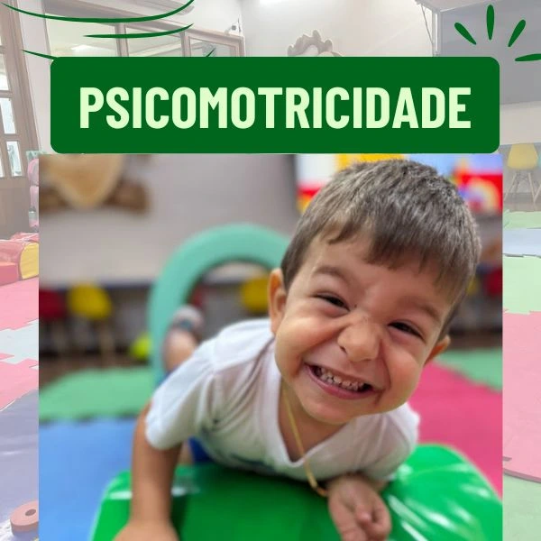

A infância que se move: corpo, emoção e aprendizagem
Na Escola CEABA, entendemos que a infância é um tempo de descobertas, emoções intensas e, principalmente, movimento. Compreendemos que a educação infantil vai além do ensino de letras e números. É uma fase crucial para o desenvolvimento integral da criança, onde aspectos motores, cognitivos, emocionais e sociais se entrelaçam. É se movimentando que a criança aprende sobre o mundo, sobre os outros e sobre si mesma. Nesse contexto, a psicomotricidade se apresenta não apenas como uma metodologia, mas como um verdadeiro cuidado com o desenvolvimento integral da criança.
“Nós, como escola, temos um papel fundamental no desenvolvimento das crianças, produzindo atividades que trabalhem, por meio das brincadeiras, habilidades motoras, cognitivas e sócio-afetivas.” — Prof. Ayrton, psicomotricista da CEABA
O que é a psicomotricidade?
A psicomotricidade é uma ciência que compreende o ser humano em sua totalidade, integrando corpo, mente e emoção. Por meio de movimentos intencionais e atividades lúdicas, ela atua no desenvolvimento motor, cognitivo e afetivo, respeitando as fases do crescimento infantil.
Na educação infantil, tal abordagem é essencial: é nessa fase que a criança está formando suas bases corporais e emocionais, para tudo que virá a seguir.
A psicomotricidade na prática: como acontece na Escola CEABA
Na Escola CEABA, as turmas do maternal 1 ao nível 2 vivenciam semanalmente aulas de psicomotricidade em um espaço projetado especialmente para isto. A sala é ampla, acolhedora e repleta de materiais que convidam ao brincar e ao movimento: tecidos coloridos, túneis, bolas, cordas, brinquedos, pisos táteis e muito mais. Tudo pensado para criar um ambiente seguro, encantador e funcional.
O professor Ayrton conduz essas vivências com um olhar atento e afetuoso:
“Quando uma criança começa a conviver com o ambiente escolar, laços precisam ser criados, para que ela se sinta segura, amada e acolhida. Assim são as aulas de psicomotricidade na educação infantil.”
Esse acolhimento é essencial. Antes de qualquer exercício motor, é preciso garantir que a criança se sinta pertencente, confiante e livre para explorar o seu corpo.
Brincar é aprender com o corpo
As atividades propostas são sempre lúdicas porque, para a criança, brincar é coisa séria. É por meio do jogo simbólico, dos circuitos motores e das brincadeiras cantadas, que ela desenvolve coordenação motora, equilíbrio, lateralidade e noção espacial.
“As crianças estão sempre em processo de descobertas, e nada mais importante que aprender que nosso corpo é muito importante. Movimentando nossos dedinhos, descobrindo que, assim como um canguru, ela também pode pular; e como outros seres que elas admiram, também podem se agachar, escalar, rastejar, correr e andar.” — Prof. Ayrton
Além das habilidades motoras básicas, também são desenvolvidas competências mais complexas: controle inibitório (esperar a vez), planejamento motor, orientação espacial e até o início da percepção rítmica — elementos fundamentais para o futuro processo de alfabetização.
Desenvolvimento integral: motor, cognitivo e emocional
A psicomotricidade não é apenas física. Quando a criança equilibra-se em um pé só, por exemplo, está exercitando foco, controle emocional e autorregulação. Quando consegue passar por um circuito que antes achava difícil, experimenta a alegria da superação e fortalece sua autoestima.
Na Escola CEABA, cada aula é uma oportunidade para que a criança se reconheça como alguém capaz, o que transparece nas pequenas vitórias do cotidiano: subir um degrau sozinha, conseguir pular com os dois pés juntos ou criar um novo jeito de brincar com um objeto conhecido.
“Trazer um envolvimento que vai além de um professor conteudista, que abrace educação infantil como uma parte importante do seu dia, é fundamental.” — Prof. Ayrton
Esse envolvimento humano, sensível e atento é o que torna a psicomotricidade da Escola CEABA tão especial.
Psicomotricidade e os vínculos afetivos
Outro diferencial importante é que as aulas não priorizam apenas o desempenho físico, mas também a relação afetiva. O professor é mediador de vínculos entre a criança e o ambiente, entre ela e os colegas e, principalmente, entre ela e seu próprio corpo.
O acolhimento, o tom de voz, o olhar e o cuidado com as emoções são constantes nas práticas conduzidas por todos professores. Há momentos de pura alegria — como nas brincadeiras com tecidos coloridos que viram asas — e outros de escuta e respeito aos limites, quando uma criança, por exemplo, não quer participar de uma atividade naquele dia. Na Escola CEABA, isso não é visto como um problema, mas como parte do processo de crescimento.
A psicomotricidade ao longo da educação infantil
Cada fase da infância traz desafios e possibilidades diferentes. Por isso, as aulas de psicomotricidade são planejadas com base nas necessidades e conquistas esperadas para cada grupo etário:
- Maternal 1 (1 ano): foco no reconhecimento do próprio corpo, exploração sensorial e primeiros deslocamentos autônomos.
- Maternal 2 (2 anos): fortalecimento da marcha, equilíbrio, ritmo e primeiras ações simbólicas.
- Maternal 3 (3 anos): desenvolvimento de coordenação ampla, jogos de imitação e movimentos de maior desafio físico.
- Nível 1 (4 anos): circuitos mais estruturados, jogos em grupo e início da lateralização.
- Nível 2 (5 anos): integração das habilidades motoras com foco no preparo para o ensino fundamental.
Um diferencial da Escola CEABA: movimento com intencionalidade
Em muitas escolas, atividades motoras ainda são tratadas como momentos de “gasto de energia”. Na Escola CEABA, há um cuidado intencional com cada vivência psicomotora. O brincar é planejado, os objetivos são claros e os resultados são acompanhados com atenção.
Essa visão se alinha com as diretrizes da Base Nacional Comum Curricular (BNCC), que reconhece o movimento como uma das linguagens fundamentais da Educação Infantil. Mais do que seguir uma tendência pedagógica, a Escola CEABA pratica a escuta da infância em seu corpo e expressão.
Conclusão
A psicomotricidade é um caminho para o desenvolvimento integral da criança. Na Escola CEABA, ela é tratada com seriedade, carinho e compromisso. Através do corpo, do brincar e dos vínculos, nossas crianças constroem as bases para se tornarem seres humanos mais confiantes, saudáveis e felizes.
“Assim se objetiva as aulas de psicomotricidade na educação infantil: trabalhando de maneira efetiva, através da ludicidade, habilidades motoras, tanto básicas quanto complexas.” — Prof. Ayrton
Essa é a infância que acreditamos e praticamos: uma infância que se move, sente, cria e aprende — com o corpo, com o coração e com alegria.